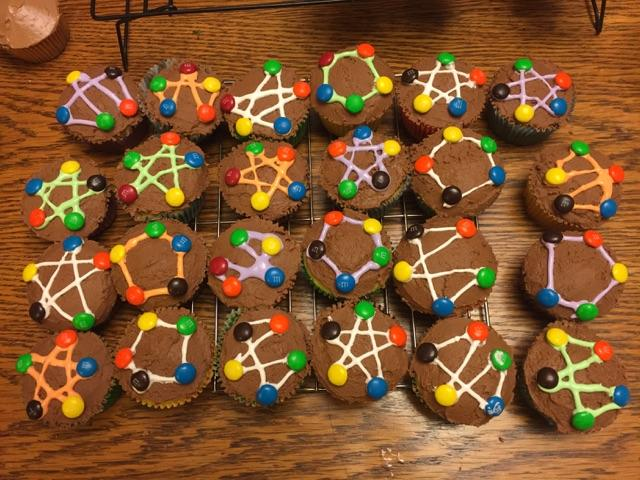
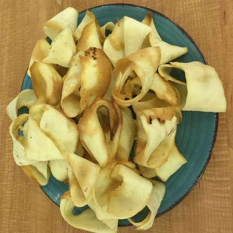
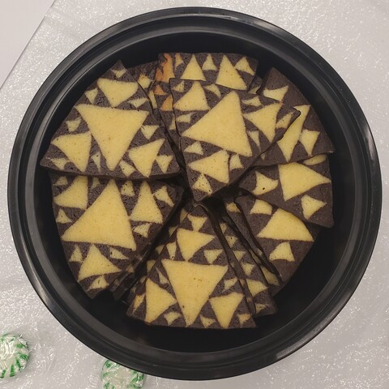

I enjoy baking. Below are some of my more mathematical creations. From left to right, they are "Graph Icing-morphism Cupcakes", "Möbius Cookies", and "Sierpinski Shortbread".
  During my undergrad at Cornell University, I was involved with the math club and the wind ensemble.


I Am A: True Neutral Human Wizard (3rd Level)
Ability Scores:
Strength-10
Dexterity-10
Constitution-10
Intelligence-16
Wisdom-13
Charisma-13
Alignment:
True Neutral A true neutral character does what seems to be a good idea. He doesn't feel strongly one way or the other when it comes to good vs. evil or law vs. chaos. Most true neutral characters exhibit a lack of conviction or bias rather than a commitment to neutrality. Such a character thinks of good as better than evil after all, he would rather have good neighbors and rulers than evil ones. Still, he's not personally committed to upholding good in any abstract or universal way. Some true neutral characters, on the other hand, commit themselves philosophically to neutrality. They see good, evil, law, and chaos as prejudices and dangerous extremes. They advocate the middle way of neutrality as the best, most balanced road in the long run. True neutral is the best alignment you can be because it means you act naturally, without prejudice or compulsion. However, true neutral can be a dangerous alignment when it represents apathy, indifference, and a lack of conviction.
Race:
Humans are the most adaptable of the common races. Short generations and a penchant for migration and conquest have made them physically diverse as well. Humans are often unorthodox in their dress, sporting unusual hairstyles, fanciful clothes, tattoos, and the like.
Class:
Wizards are arcane spellcasters who depend on intensive study to create their magic. To wizards, magic is not a talent but a difficult, rewarding art. When they are prepared for battle, wizards can use their spells to devastating effect. When caught by surprise, they are vulnerable. The wizard's strength is her spells, everything else is secondary. She learns new spells as she experiments and grows in experience, and she can also learn them from other wizards. In addition, over time a wizard learns to manipulate her spells so they go farther, work better, or are improved in some other way. A wizard can call a familiar- a small, magical, animal companion that serves her. With a high Intelligence, wizards are capable of casting very high levels of spells.
Find out What Kind of Dungeons and Dragons Character Would You Be?, courtesy of Easydamus (e-mail)
And surprisingly:
 |
If I were a Springer-Verlag Graduate Text in Mathematics, I would be J.L. Doob's Measure Theory. I am different from other books on measure theory in that I accept probability theory as an essential part of measure theory. This means that many examples are taken from probability; that probabilistic concepts such as independence, Markov processes, and conditional expectations are integrated into me rather than being relegated to an appendix; that more attention is paid to the role of algebras than is customary; and that the metric defining the distance between sets as the measure of their symmetric difference is exploited more than is customary. Which Springer GTM would you be? The Springer GTM Test |